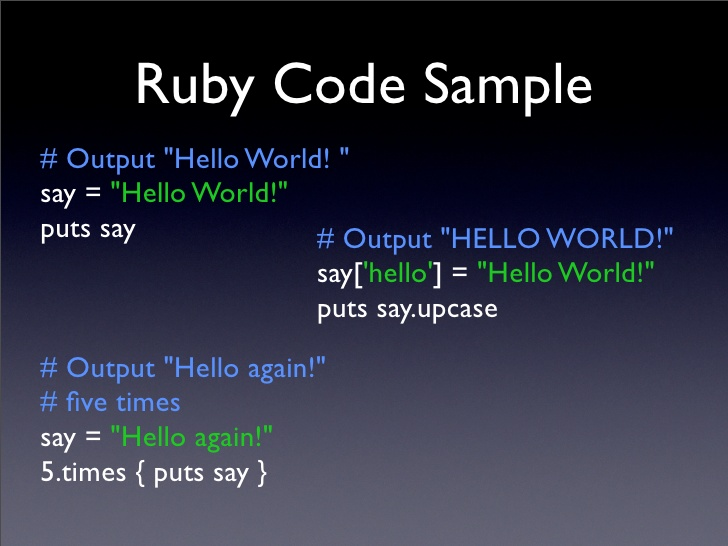
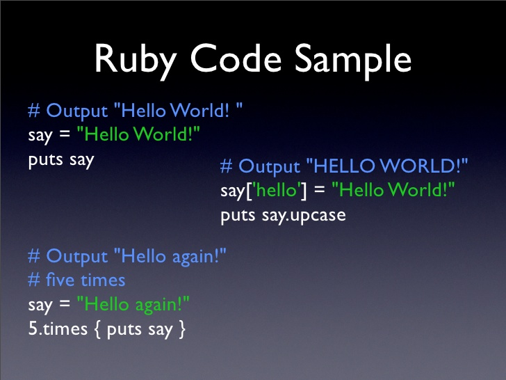

Ruby Features
Ruby was created by Matsumoto, it was released in 1995. It is a mixture of Perl, Smalltalk, Eiffel, Ada, ect. Ruby has a good balance of functional programming and imperative programming.
Want to learn how to code your first program?
Click here to explore the sources used for this website.